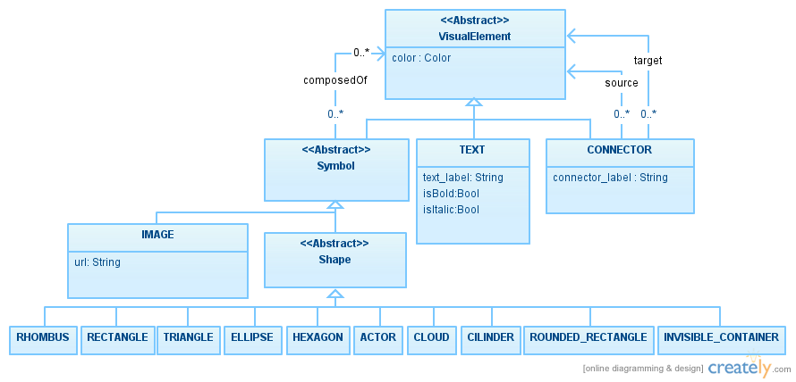

Lightning VLM
The Lightning VLM (present by default in any newly created language : /Concrete Syntax/LightningVLM.als) is a generic definition of a visual language.
It is composed of a set of visual elements:
-
Symbols are visual elements that can contain other visual elements. They are of two different types:
-
Shape are basic geometric shapes. Amongst them are the most traditional : RECTANGLE, TRIANGLE, etc.. and the less traditional : ACTOR, etc.. INVISIBLE_CONTAINER is a special shape in the sense that it will not be visible (You can imagine it as a invisible rectangle that is used to enforce the elements it contains to stay be grouped together).
-
-
IMAGE is meant to be an extension point to the visual language. Indeed, you can introduce to the set of available symbols any image by simply providing the corresponding URL : (local or Internet)
-
- CONNECTOR are simple arrows meant to easily represent relations between shapes. CONNECTORs have a visual element as source and target. Thus a CONNECTOR can as well be connected to another CONNECTOR, thus allowing the rendering of "ternary" relations.
- TEXT are used to insert styled text to your graphical representation. They can be used to label Symbols (in that case they should be part of the Symbol.composedOf relation).
In order to specify the value of the text, you should use the textLabel field that is a sequence of universe.
The sequence allows to order the components of your label in case it is composed of multiple artifacts, and this sequence is typed as universe in order to let you assign any signature elements to it.
-
If you assign a String to the textLabel, (eg: t.textLabel[0]="test") then the String ("test") will be displayed.
-
If you assign an element of a given Signature to the textLabel (eg :t.textLabel[0]=n // with n in Test) then the label of this n element will be displayed. (eg: Test_0)
-
Note that Assigning multiple elements to a text Label do not induce spaces. As an example :
t.textLabel[0]="test"
t.textLabel[1]=n
will be rendered : testTest_0
In order to insert a space, 2 options are valid
-
Adding a space at the end of the first string:
t.textLabel[0]="test "
t.textLabel[1]=n
-
Adding an extra space between the two indexes:
t.textLabel[0]="test"
t.textLabel[1]=" "
t.textLabel[2]=n
It also contains information about Layouts (for now we support basic layout such as Horizontal and Vertical layout).
Those Layout are meant to be applied on elements that composes symbols.
And it contains some Color that are meant to be properties of any visual elements.
An overview of this Visual Language is given in the following model :

Note that all the elements written fully in uppercase are non-abstract elements whose atoms are interpreted by the tool. You should thus use directly those signatures in your definition of a concrete syntax when you write the mappings of your
transformation.